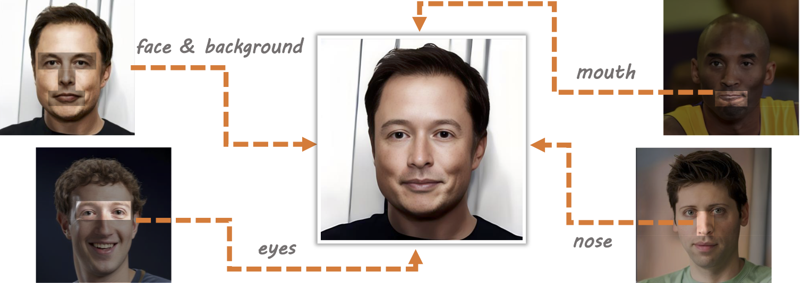
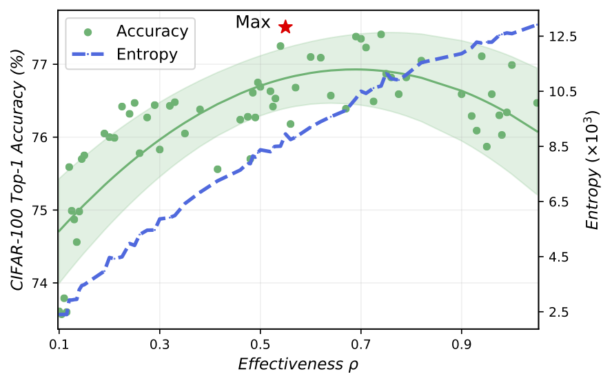
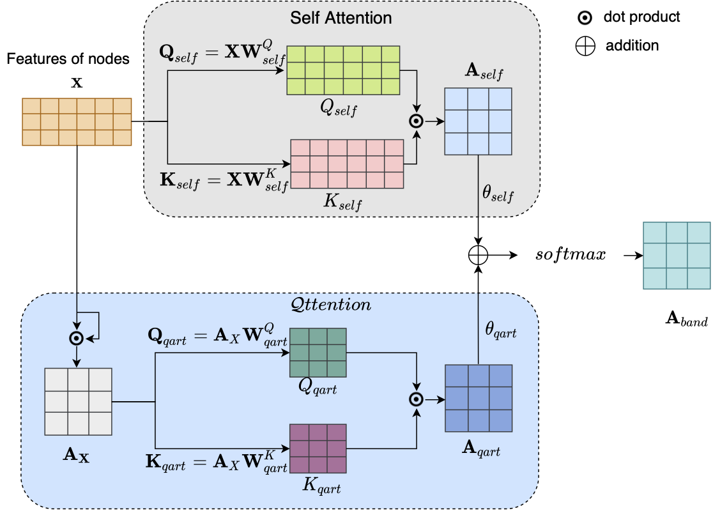
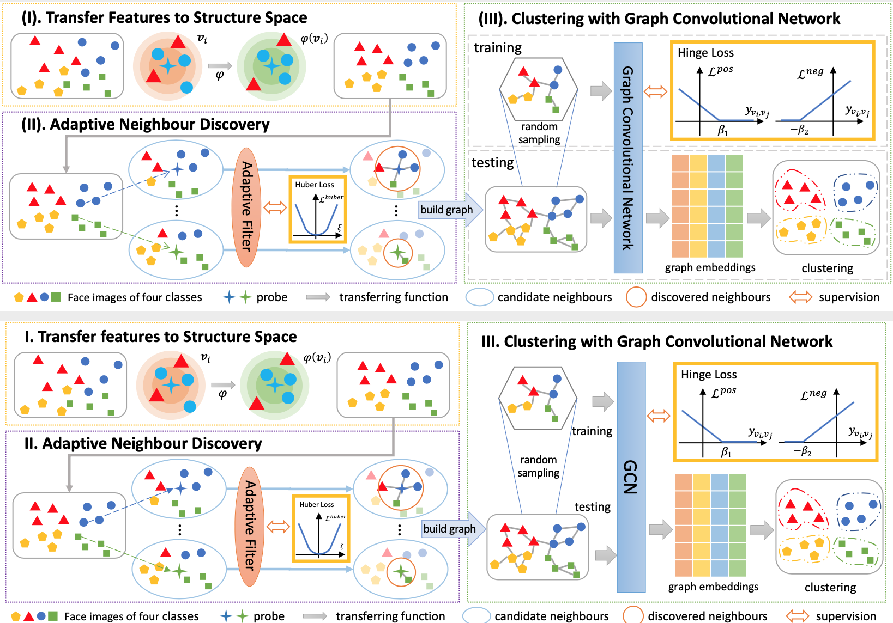
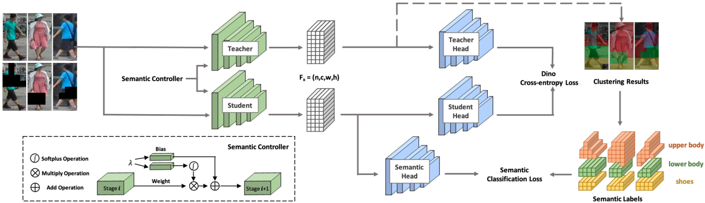

|
I am a Senior Algorithm Engineer at DAMO Academy of Alibaba Group.
Before I joined DAMO, I was an Algorithm Engineer at JD until July 2019.
I received my master's degree from Beihang University in 2017. My research interests include Graph Learning, Metric Learning and Efficient Deep Learning in Neural Architecture Search with application in Computer Vision. Email: myslacklife [AT] gmail.com, xiachen.wyh [AT] alibaba-inc.com |
|  |
Zheng Yu#, Yaohua Wang# ✉, Siying Cui, Aixi Zhang, Wei-Long Zheng, Senzhang Wang. FuseAnyPart: Diffusion-Driven Facial Parts Swapping via Multiple Reference Images. Advances in Neural Information Processing Systems (NeurIPS), 2024. [Arxiv] [OpenReview] [GitHub] [Poster] [Slides] [video][bib] A novel diffusion-driven facial parts swapping methods with multiple reference images. |
|  |
Xuan Shen#, Yaohua Wang#, Ming Lin, Yilun Huang, Hao Tang, Xiuyu Sun, Yanzhi Wang. DeepMAD: Mathematical Architecture Design for Deep Convolutional Neural Network. Conference on Computer Vision and Pattern Recognition (CVPR), 2023. [Arxiv] [OpenReview] [GitHub] [Poster] [video][bib] A novel framework termed Mathematical Architecture Design for Deep CNN to design high-performance CNN models in a principled way. |
|  |
Yaohua Wang, Fangyi Zhang, Ming Lin, Senzhang Wang, Xiuyu Sun, Rong Jin. Robust Graph Structure Learning over Images via Multiple Statistical Tests. Advances in Neural Information Processing Systems (NeurIPS), 2022. [Arxiv] [OpenReview] [GitHub] [Poster] [video-1min] [video-5min] [bib] A novel method for learning robust graph structures in computer vision tasks where graph structures are not available. |
|  |
Yaohua Wang, Yaobin Zhang, Fangyi Zhang, Senzhang Wang, Ming Lin, YuQi Zhang, Xiuyu Sun. Ada-NETS: Face Clustering via Adaptive Neighbour Discovery in the Structure Space. In Proceedings of the International Conference on Learning Representations (ICLR), 2022. [Arxiv] [OpenReview] [GitHub] [Zhihu] [Video] [bib] A novel algorithm named Ada-NETS is proposed to construct the clean graph for GCNs to cluster faces in this paper. |
|  |
Weihua Chen, Xianzhe Xu, Jian Jia, Hao Luo, Yaohua Wang, Xiuyu Sun, Fan Wang, Rong Jin. Beyond Visual Appearance: a Semantic Controllable Self-Supervised Learning Framework for Human-Centric Visual Tasks. Conference on Computer Vision and Pattern Recognition (CVPR), 2023. [Arxiv] [OpenReview] [GitHub] [Poster] [video][bib] A controllable self-supervised learning framework to produce representations with different ratios of semantic information. |
![[Poster]](https://nips.cc/media/PosterPDFs/NeurIPS%202022/fdaa09fc5ed18d3226b3a1a00f1bc48c.png){kind=link}